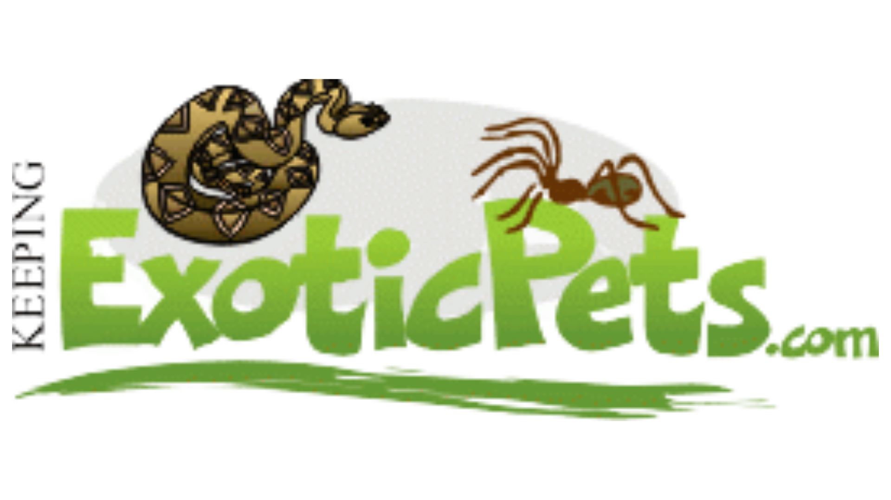

Here are several blog sites for pet owners who wish to share their own pet stories and experiences! |
 |
|
| Adopt a Pet This non-profit pet organization helps rescued pets get adopted. But if you already have a houseful of pets, you’ll still want to check it out! Adopt A Pet’s blog offers tips on training, health, safety, nutrition, and more for cats and dogs. |
Blog Paws With the tagline “Shaping social media excellence, influence and education one amazing pet parent at a time” it is clear to see that the community behind this pet blog is full of passion for pets. Bringing together pet enthusiasts through social media, this blog is best for communicating ideas and tips. |
| All About Cats As you can tell from the name, this blog is focused on cats. We’re All About Cats is a popular cat blog that offers advice on cat behavior and common ailments, the best food and toys, and whether you should consider pet insurance. |
Pet Life Today Pet Life Today is mostly focused on dogs and cats, though you can find articles on rabbits and other pets. They offer extensive product guides and a certified veterinarian board of advisors. Have a specific question? Try their Ask the Vet feature! |
|  | |
| Keeping Exotic Pets Bored of the usual cats and dogs? Here’s a pet blog that focuses on tarantulas, insects, and reptiles. On Keeping Exotic Pets, you can learn all about raising praying mantises and what you should feed poison dart frogs! |
Go Pet Friendly Want to travel with your pet but not sure where to start? Go Pet Friendly is for you! Their Take Paws blog is all about traveling with pets. They offer lists of pet-friendly hotels and campgrounds, road trip planners, and packing guides. |
 |
|
| Pet Bucket Pet Bucket offers health, safety, and training tips for dogs and cats. Learn about behavior quirks, what you should consider before adopting a new pet, and how to help your pet through common ailments. |
The Animal Foundation The Animal Foundation is a non-profit spay and neuter clinic based in Las Vegas that specializes in treating all kinds of sick and injured pets. Their blog offers tips on training, pet health, safety, and more! |
| Follow us! |
Contact us: |